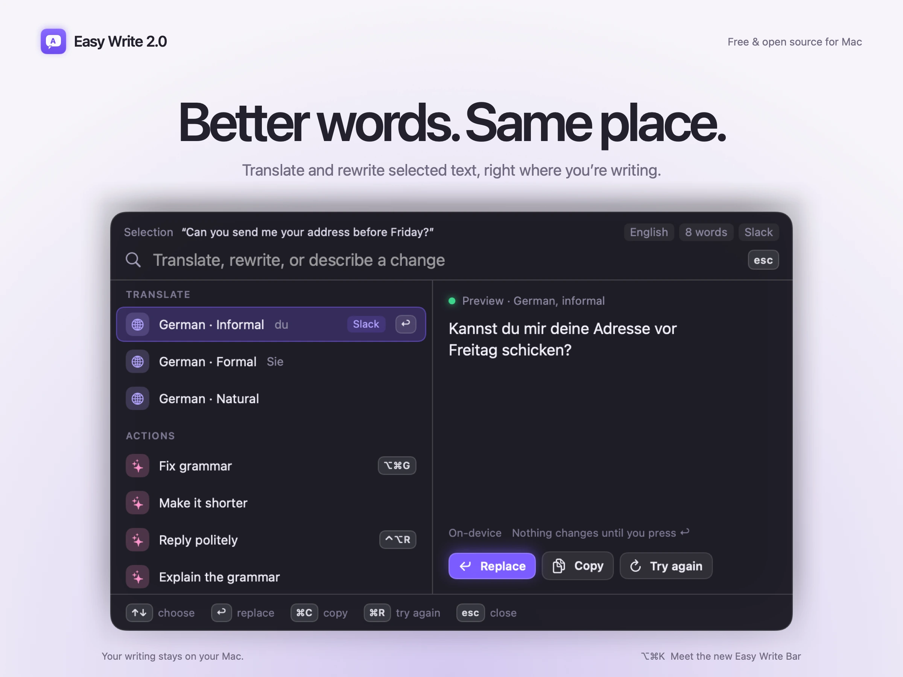
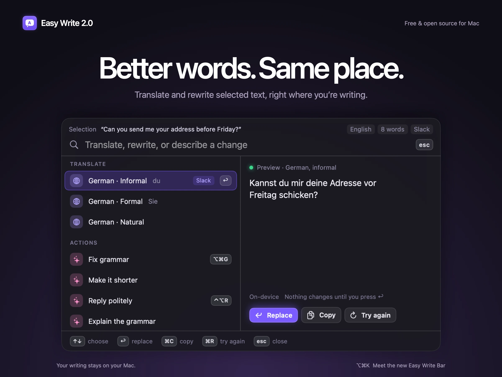

Easy Write 2.0Local launch kit · Not published
Better words.
Same place.
A launch kit built around the real app: the Bar, the menu-bar panel, tone control, reader,
actions and the native notch animation. All interface text and settings here are synthetic.

The 2.0 introductionDaylight · 2400 × 1800 PNG master + WebP
Small motion. A real difference.
The production SwiftUI HUD and shipping spring, captured natively. Click play to see it drop,
show progress and completion, then retract.
Native HUD recording on a staged backdrop, with sample timings. Not a translation benchmark
or a recording of paste delivery. No desktop pixels were captured. A static poster is shown until you play.
One image. One reason to use it.
Midnight alternative hero

Unframed native screenshots